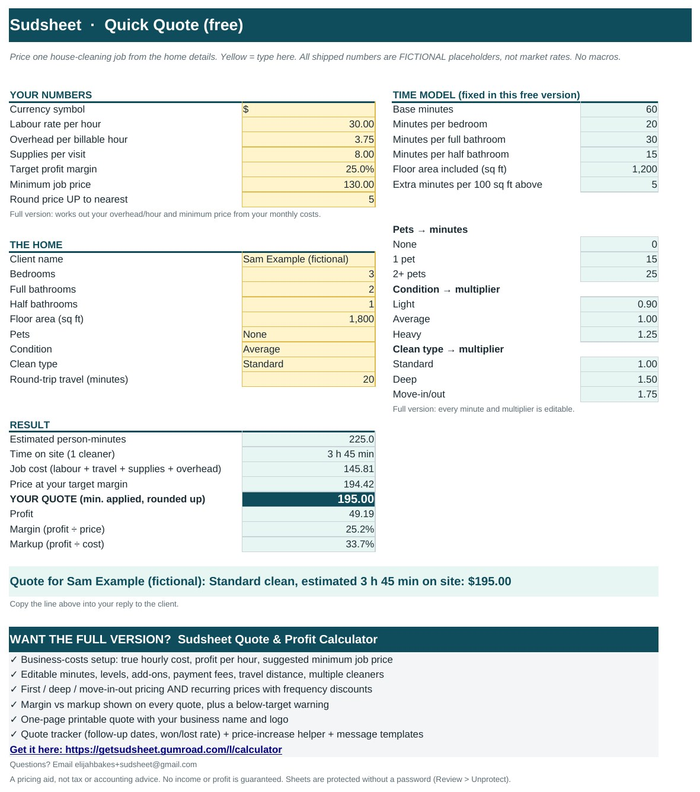

Free house cleaning quote calculator and pricing guides for solo cleaners
Price a house-cleaning job from bedrooms, bathrooms, square feet, pets and condition, without a walkthrough. A free spreadsheet plus plain-English guides. No sign-up app, no subscription.

Guides
- How to Price a House Cleaning Without a Walkthrough (Step by Step)
Turn bedrooms, bathrooms, square feet, pets and condition into a time estimate and a price that covers your real costs, for the first clean and recurring visits. - Margin vs Markup for House Cleaners: Why Adding 25% Isn't 25% Profit
A plain-English explanation of margin vs markup for cleaning businesses, with worked examples, a conversion table and what recurring discounts do to your profit. - How to Calculate Your True Hourly Cost and Minimum Job Price as a Solo Cleaner
Your pay rate isn't your cost. Work out overhead per billable hour, your true hourly cost, the hourly price you need and a minimum job price, with a worked example.
Want first-visit + recurring pricing?
The Sudsheet Quote & Profit Calculator adds editable minutes, a business-costs setup, first-visit vs recurring pricing, a printable one-page quote, a follow-up tracker and a price-increase helper. Excel + Google Sheets. 14-day refund.